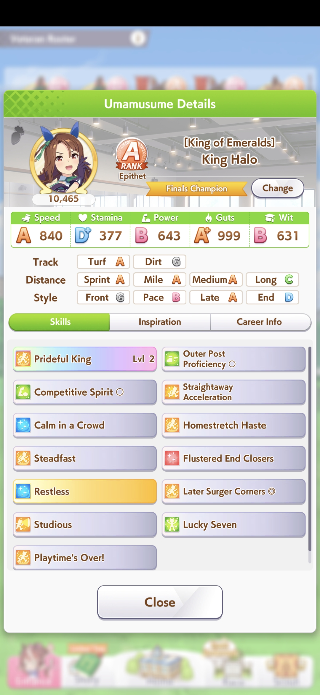
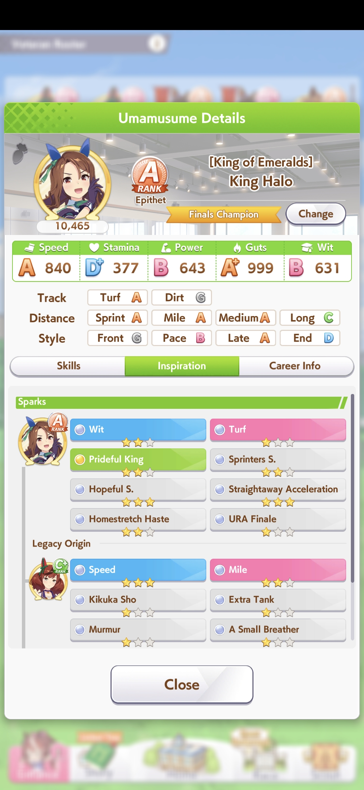
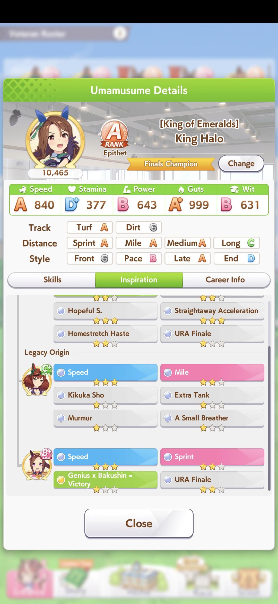

Please upload your all_runners.json file to begin.
Produce this file from the UmaScanner program with screenshots from your runner's skills and sparks tabs
Loading...
Your screenshots should look like these:



| Entry Id | Name | Score | Speed | Stamina | Power | Guts | Wit | Sparks | Whites | GP1 | GP2 | ? |
|---|
| Entry Id | Name | Score | Whites | White Sparks | GP1 | GP2 |
|---|
| Entry Id | Name | Score | Skills |
|---|
| Grandparent Name | Times Used | Parent Sparks |
|---|
A Global wiki for Umamasume game data, including character stats, skill descriptions, event calculators, and inheritance charts.
This guide is a general overview of everything you need to get started and will be useful for a long time, contains information about most game topics.
A race simulator to compare runners on specific tracks and a skill recommender. This version allows you to set a virtual pacemaker to set the pace of the run.
A race simulator to compare runners on specific tracks and a skill recommender.
A page containing the current Champions Meeting details and a schedule of upcoming Champions Meetings.
A tool for tracking club ranking and fan contribution as well as used to find characters and support cards to borrow.
A tool used to calculate the grade of your runner, useful if you are planning a build for a high rank or min-maxing for Champions Meet Open League. No official English translation.